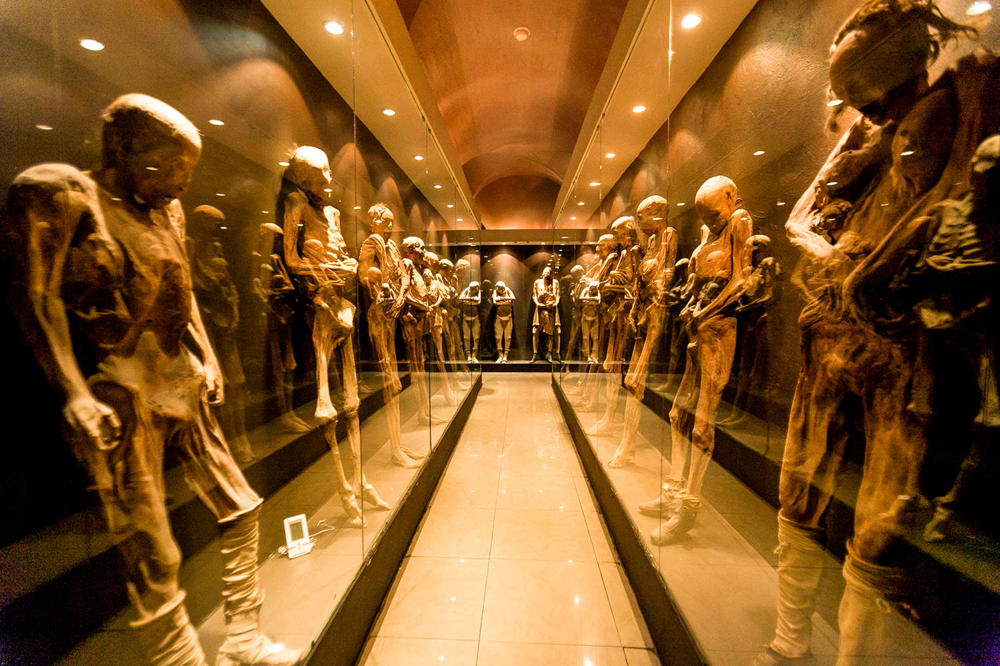

Es el "Pozole". Este tradicional guiso mexicano consiste en granos de maíz cocidos con carne de cerdo o pollo, acompañados de una variedad de vegetales como lechuga, rábano, cebolla y chile, además de ser sazonado con hierbas y especias. El pozole es un plato típico en festividades y celebraciones, y se sirve tanto en restaurantes como en puestos callejeros en todo el estado de Guanajuato.
El Museo de las Momias de Guanajuato es uno de los lugares más famosos y reconocidos de la ciudad de Guanajuato, México. Este museo alberga una colección única de momias naturales, que fueron descubiertas en el Cementerio Municipal de Guanajuato a finales del siglo XIX y principios del siglo XX.

Notas relevantes:
El callejón del Beso: En la ciudad de Guanajuato,
se encuentra el famoso callejón del Beso, conocido por su estrechez y
por la leyenda romántica que lo rodea. Se dice que si dos personas se
paran en balcones opuestos y se dan un
beso, tendrán siete años de buena suerte en el amor.
Túnel subterráneo: Guanajuato cuenta con un sistema de túneles
subterráneos que originalmente se construyeron para controlar las
inundaciones. Hoy en día, estos túneles son utilizados como vías de
tráfico y estacionamiento, lo que convierte a Guanajuato en una de las
ciudades más singulares para conducir.